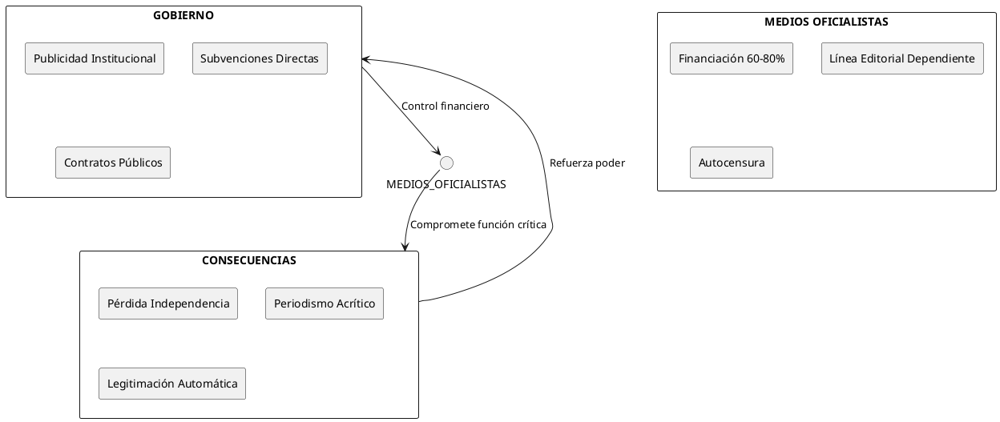
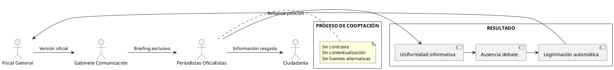
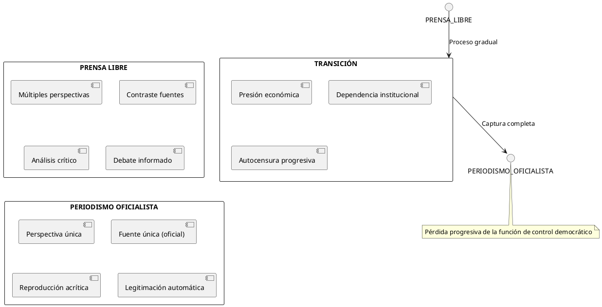
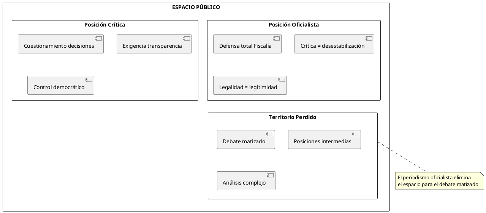
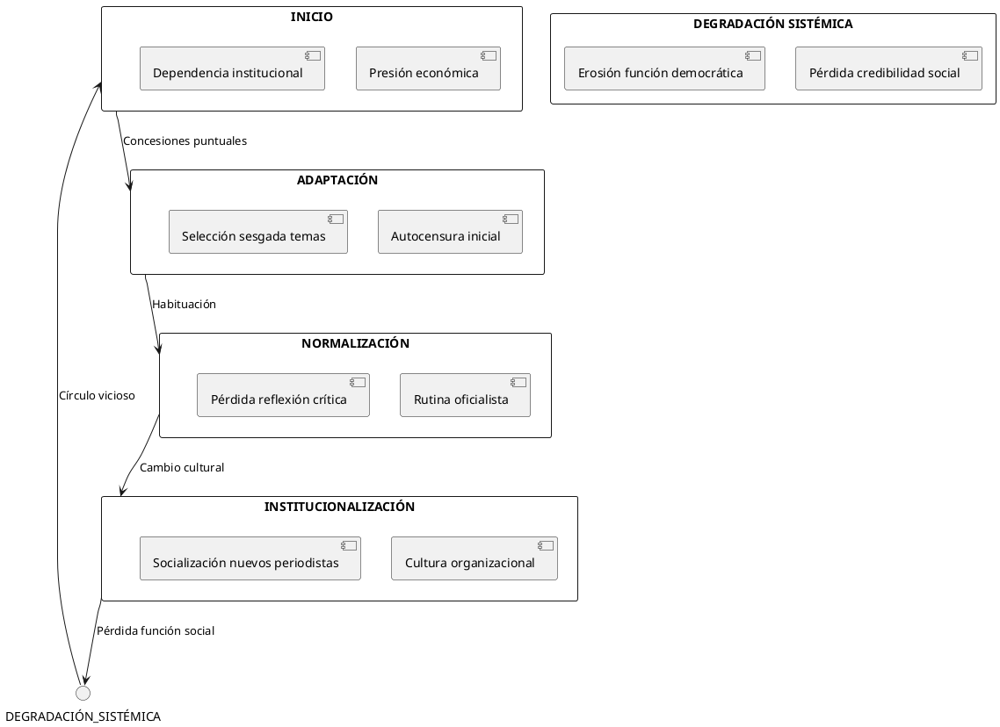

El Periodismo Oficialista: Cuando la Prensa se Convierte en Altavoz
El Periodismo Oficialista: Cuando la Prensa se Convierte en Altavoz del Poder
En un contexto donde la independencia mediática es pilar fundamental de la democracia, este post "El Periodismo Oficialista: Cuando la Prensa se Convierte en Altavoz del Poder" ofrece un análisis incisivo sobre la transformación de los medios de comunicación en instrumentos de legitimación gubernamental. El texto examina cómo la dependencia económica y la cooptación de fuentes informativas erosionan la función crítica del periodismo. Con un arsenal de datos, tablas comparativas y diagramas visuales generados en PlantUML, desentrañamos los mecanismos de captura mediática y sus consecuencias devastadoras para el debate público y la salud democrática.
Introducción y Marco Conceptual
En las democracias contemporáneas observamos la transformación de sectores mediáticos en instrumentos de legitimación gubernamental, fenómeno que compromete los fundamentos del periodismo independiente y erosiona el control democrático del poder.
Definición del Problema
El periodismo oficialista constituye la subordinación de la función informativa a los intereses del poder ejecutivo, transformando medios de comunicación en canales de propaganda institucional disfrazada de información objetiva.
Análisis Estructural de la Captura Mediática
Mecanismos de Dependencia
Dependencia Económica

Indicadores de Dependencia Mediática
| Indicador | Nivel Alto (%) | Nivel Medio (%) | Nivel Bajo (%) |
|---|---|---|---|
| Publicidad institucional/ingresos totales | >50 | 25-50 | <25 |
| Reproducción literal comunicados oficiales | >70 | 40-70 | <40 |
| Presencia fuentes alternativas | <20 | 20-50 | >50 |
| Análisis crítico decisiones fiscales | <10 | 10-30 | >30 |
| Transparencia financiación | <30 | 30-70 | >70 |
Cooptación de Fuentes Informativas

Impacto en el Sistema Democrático
Erosión del Debate Público
Mecanismos de Silenciamiento
| Estrategia | Descripción | Ejemplo Fiscal | Consecuencia |
|---|---|---|---|
| Deslegitimación crítica | Presentar críticas como ataques institucionales | "Ataques a la independencia judicial" | Autocensura ciudadana |
| Tecnicización | Reducir decisiones políticas a aspectos técnicos | "Mera aplicación de la ley" | Exclusión debate público |
| Polarización artificial | Dicotomía: apoyo total vs. sedición | "O apoyas la Fiscalía o eres antisistema" | Radicalización posiciones |
| Monopolización narrativa | Una sola versión válida | Reproducción acrítica comunicados | Uniformidad informativa |
Evolución del Pluralismo Informativo

Polarización del Discurso Público

Análisis de Casos: Cobertura de Decisiones
Criterios de Evaluación Periodística
| Criterio | Periodismo Independiente | Periodismo Oficialista | Peso (%) |
|---|---|---|---|
| Contraste de fuentes | Múltiples fuentes, verificación cruzada | Fuente única (oficial) | 25 |
| Contextualización | Antecedentes, consecuencias, alternativas | Presentación aislada | 20 |
| Análisis crítico | Evaluación independiente, preguntas incómodas | Reproducción acrítica | 20 |
| Pluralidad perspectivas | Voces diversas, opiniones divergentes | Perspectiva única | 15 |
| Transparencia metodológica | Explicación proceso investigativo | Opacidad informativa | 10 |
| Seguimiento temporal | Continuidad, evolución casos | Cobertura puntual | 10 |
Consecuencias Profesionales y Éticas
Indicadores de Degradación Profesional
| Área | Indicador | Estado Inicial | Estado Degradado | Impacto |
|---|---|---|---|---|
| Credibilidad | Confianza ciudadana (%) | 70-80 | 30-40 | Alto |
| Rigor | Verificación fuentes | Sistemática | Excepcional | Alto |
| Independencia | Autonomía editorial | Plena | Limitada | Crítico |
| Pluralismo | Diversidad perspectivas | Amplia | Restringida | Alto |
| Transparencia | Disclosure conflictos | Obligatoria | Opcional | Medio |
| Formación | Estándares éticos | Estrictos | Relajados | Crítico |
Ciclo de Degradación Profesional

Referencias y Documentación
Referencias Académicas
Teoría del Periodismo
- Hallin, D. C., & Mancini, P. (2004). Comparing Media Systems: Three Models of Media and Politics. Cambridge University Press.
- McChesney, R. W. (2015). Rich Media, Poor Democracy: Communication Politics in Dubious Times. New Press.
- Herman, E. S., & Chomsky, N. (2002). Manufacturing Consent: The Political Economy of the Mass Media. Pantheon Books.
Estudios sobre Independencia Mediática
- Reporters Without Borders. (2024). World Press Freedom Index 2024. RSF.
- Freedom House. (2024). Freedom of the Press 2024: Media Freedom Hits a Decade Low. Freedom House.
- Transparency International. (2024). Media Integrity Matters: Reclaiming Public Service Values in Media and Journalism. TI.
Marco Legal
Nacional
- Constitución Española, Art. 20: Libertad de expresión e información
- Ley 29/2005 de Publicidad y Comunicación Institucional
- Ley 19/2013 de Transparencia, Acceso a la Información Pública y Buen Gobierno
Internacional
- Declaración Universal de Derechos Humanos, Art. 19
- Convenio Europeo de Derechos Humanos, Art. 10
Recomendación CM/Rec(2018)1 del Consejo de Europa sobre pluralismo mediático
Análisis Comparativo Internacional
| País | Modelo Mediático | Dependencia Estatal (%) | Índice Libertad Prensa | Observaciones |
|---|---|---|---|---|
| Noruega | Liberal democrático | 15 | 95.18 | Financiación diversificada |
| Francia | Polarizado pluralista | 35 | 79.24 | Subvenciones directas significativas |
| Italia | Polarizado pluralista | 45 | 68.16 | Alta politización medios |
| Hungría | Autoritario competitivo | 70 | 31.67 | Captura mediática sistemática |
| España | Polarizado pluralista | 40 | 74.31 | Dependencia pub. institucional |
Glosario de Términos
| Término | Definición |
|---|---|
| Captura mediática | Proceso mediante el cual medios de comunicación quedan subordinados a intereses políticos o económicos específicos |
| Periodismo oficialista | Práctica periodística caracterizada por la reproducción acrítica de versiones gubernamentales |
| Dependencia institucional | Condición de medios que dependen significativamente de recursos o información oficial |
| Pluralismo informativo | Diversidad de perspectivas, fuentes y enfoques en la cobertura informativa |
| Autocensura | Limitación voluntaria de contenidos críticos por parte de medios o periodistas |
Conclusiones
El periodismo oficialista representa una amenaza fundamental para la salud democrática de nuestras sociedades. La transformación de medios de comunicación en instrumentos de legitimación gubernamental erosiona el control democrático del poder y empobrece el debate público.
El caso específico de la defensa mediática acrítica del Fiscal General ilustra cómo esta deriva no fortalece las instituciones, sino que las debilita al sustraerlas del necesario escrutinio ciudadano. Una Fiscalía verdaderamente robusta debe poder resistir y beneficiarse del debate público transparente.
La recuperación de un periodismo independiente requiere abordar tanto las causas estructurales (dependencia económica) como las profesionales (degradación de estándares éticos). Solo mediante un compromiso renovado con la función crítica del periodismo podremos garantizar que el poder, en todas sus manifestaciones, rinda cuentas ante la ciudadanía.
La democracia no puede sobrevivir sin un periodismo libre e independiente. Por eso, la lucha contra el periodismo oficialista no es solo una cuestión profesional, sino un imperativo democrático.
—
Documento generado para análisis académico y debate público